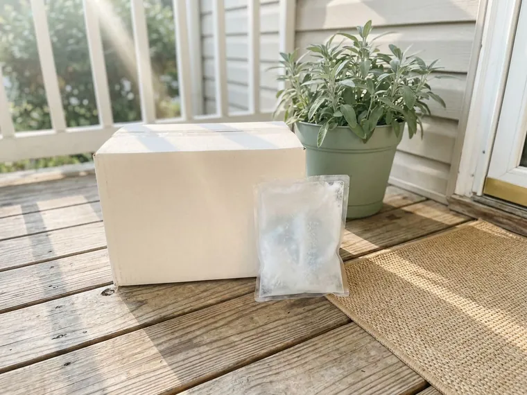

Hair Growth in Highlands Ranch, CO
Hair loss treatment for men and women in Highlands Ranch, CO, with a licensed provider review, a few photos and medication shipped if prescribed.
- Online visit with scalp photos
- Plans for men and women
- Pills, topicals or both
- Photo check-ins every few months

- Licensed Colorado Medical Providers
- Personalized Treatment Plans
- Discreet Home Delivery
- Ongoing Medical Support
Hair Growth Treatment for Men and Women in Highlands Ranch, CO
Aurora Weight Loss treats hair loss as the slow, very common medical condition it is. Pattern hair loss affects about half of men by age 50 and a large share of women, and early treatment keeps more hair. Your review is done online.
What the program includes:
- Photo review of hairline, top and crown before prescribing
- Choice of oral, topical or combined treatment plans
- Progress photo check-ins at roughly three, six and twelve months

Start your online hair loss review in Highlands Ranch, CO.
Answer a few questions online and upload three scalp photos so a licensed provider can recommend a plan.
Related Hair Growth Options in Highlands Ranch, CO
Prescription hair regrowth formulas for men and women in Highlands Ranch, CO, built around proven ingredients like minoxidil and finasteride.


helped
Why patients choose us for Hair Growth in Highlands Ranch, CO
Treating hair loss is mostly about choosing well at the start, then staying consistent for twelve months. Our providers spend the review on that first choice, because the wrong starting plan wastes months.
- Photo-based review, Providers look at your hairline, top and crown before recommending anything.
- Plans by sex, Men and women get different options, with pregnancy safety screened first.
- Long-term check-ins, Progress photos every few months show whether the plan is working.
Anywhere in Highlands Ranch
Anyone in Highlands Ranch or the surrounding area can start a hair loss visit online, using a phone camera for the photos and about ten minutes for the questions. If treatment is prescribed, it ships from a licensed US pharmacy to your door. Refills follow automatically.
Licensed care team
Licensed providers on the Oakwell MD medical team review every hair loss case. They compare your photos with your history to confirm the type of hair loss before choosing a medicine. They message you if they need more.
Safety first
Prescriptions are filled by licensed US pharmacies, including licensed compounding pharmacies for topical blends. Compounded formulas, such as topical finasteride with minoxidil or minoxidil with GHK-Cu, are not FDA-approved, and your provider will say so plainly before you start. You always know which kind you are getting.
The care standards behind every Highlands Ranch plan
Aurora Weight Loss runs on the Oakwell MD clinical model: board-certified providers, US pharmacies that meet state and federal compounding rules, and follow-up that does not stop when the package arrives. Every treatment on this site goes through the same screening throughout Highlands Ranch, CO.
How Hair Growth Treatment Works in Highlands Ranch, CO
Hair Loss Treatment for Men in Highlands Ranch
Most male hair loss is androgenetic alopecia. It is driven by DHT, a hormone made from testosterone that slowly shrinks scalp follicles in men who inherited a sensitivity to it, which is why it follows a predictable pattern at the temples and crown. Finasteride lowers DHT, and minoxidil supports growth directly. Combined use tends to work better than one alone.

Hair Loss Treatment for Women
In women, thinning usually shows up as a wider part or less volume on top, while the front hairline stays put. Pattern loss is the usual reason, though low ferritin, thyroid trouble and postpartum shedding can mimic it. Topical minoxidil is the approved starting point. Off-label oral options, such as spironolactone, are added when appropriate.
Finasteride + Minoxidil in Highlands Ranch
Finasteride is an FDA-approved 1 mg daily tablet for male pattern hair loss, and it lowers scalp and blood DHT by roughly two-thirds. Minoxidil, FDA-approved as a topical, keeps follicles in the growth phase longer so strands come in thicker. The pairing is the standard. Some men use a compounded topical spray that combines both, which is not FDA-approved but may reduce whole-body exposure to finasteride.
Dutasteride + Minoxidil
Dutasteride blocks both forms of the enzyme that makes DHT, so it lowers DHT by more than 90 percent in the blood. Approved for prostate enlargement, it is used off-label for hair, usually after finasteride falls short. It lingers. Its half-life is about five weeks, so screening and side effect planning take more care. Minoxidil rounds it out.
Minoxidil + GHK-Cu in Highlands Ranch
Some people want a topical-only plan with no DHT blocker. A compounded minoxidil solution with GHK-Cu, a copper peptide, is one option, with minoxidil doing the main work and GHK-Cu adding early, mostly lab-based support for scalp and follicle health. It is compounded. It is not FDA-approved. Women and finasteride-averse men use it most.
How a Provider Chooses Between Treatments
Your provider weighs sex, age, pattern, speed of loss and medical history. They also ask about pregnancy plans, worries about sexual side effects, past depression and whether you would rather take a pill or apply something to your scalp twice a day. Most men begin with the finasteride and minoxidil pairing. Minoxidil is the usual first step for women.
What to Expect Over Time in Highlands Ranch
Hair grows about half an inch a month. That is why most treatments take three to six months to show a visible change and around twelve months to reach their full effect, even when they are working from the first week. Early shedding on minoxidil is common and usually temporary. Stopping treatment lets the loss resume.

How the Online Process Works
You start with a questionnaire about your hair loss, health history and medications. Then come photos. You upload three pictures, your hairline from the front, the top of your head and the crown, taken in good light with dry hair. A licensed provider reviews it all and may message you. If treatment is appropriate, it ships from a licensed US pharmacy.
Hair Loss Treatment Near Me in Highlands Ranch, CO
Searching for hair loss treatment near me in Highlands Ranch usually means a dermatology waitlist or a hair clinic pitching a transplant consult. Online, you skip the wait and the sales pitch, and a provider looks at your photos within a day or two. If prescribed, it is mailed.
What the provider needs is clear photos and an honest history. They need three dry-hair photos, your medication list, your mood history and your family plans. Mention anything you have already tried.
Most hair loss medicine is a long game, which is why home delivery helps. Automatic refills keep you from running out halfway through a year of treatment. Photo check-ins happen online too.
Is Hair Growth right for you?
Five quick questions, then a licensed provider reviews your answers. No commitment.
Aurora Weight Loss at a glance
- Online care for Highlands Ranch, CO and nearby
- Everything handled online
- Medication shipped from licensed US pharmacies
- 4.9-star rated by 729+ Aurora-area patients
Highlands Ranch patients
- Population
- 103,444
- Visits
- Online, from anywhere in Highlands Ranch
- Delivery
- Highlands Ranch and communities nearby
- Nearby
- Littleton, Centennial, Englewood, Parker
People in Highlands Ranch, CO choose an online clinic for hair growth treatment because a few phone photos replace a waitlist and refills come to the door.
Highlands Ranch map
Everything we treat in Highlands Ranch, CO
Weight loss is where most patients start. The same provider-reviewed, shipped-to-you model covers peptides, sexual health, hair, sleep and longevity.


How to Get Started With Hair Growth Treatment in Highlands Ranch, CO
Three steps, all online, with a licensed provider reading every answer and looking at every photo.
Answer a Few Questions
Complete a short online questionnaire about your hair loss, health history and medications. Then upload photos of your hairline, top and crown.
Provider Reviews Your Photos
A licensed provider looks at your photos and history to confirm the type of hair loss. If treatment is appropriate, they choose a plan and send the prescription.
Treatment and Photo Check-Ins
Medication ships from a licensed US pharmacy to your door. Your care team asks for progress photos every few months to track results.
Frequently Asked Questions About Hair Growth in Highlands Ranch
It may be if you have gradual thinning, a receding hairline or a widening part and still have some hair in those areas. A licensed provider reviews your photos and history to confirm it is pattern hair loss and pick the right medicine. Patchy loss needs an in-person exam.
You get the reason, usually in a short message, and sometimes a referral to a dermatologist. Health history can rule out certain options.
No. Compounded blends are prepared by licensed pharmacies and are not FDA-approved, though the individual ingredients may be.Your provider tells you which kind you are getting.
Women who could become pregnant should not take or handle finasteride, since it can cause birth defects in a male baby. Postmenopausal women sometimes use it off-label.
Most insurance plans treat pattern hair loss as cosmetic and do not cover it. Our program is a direct online service, and some people use an HSA or FSA card, depending on how their plan handles prescriptions.Generic finasteride and minoxidil keep things simple.
Pricing is shown after the provider review and depends on your treatment plan, since oral, topical and compounded options differ. You see it before anything ships.
Most men starting finasteride and minoxidil skip labs. For women, recent thyroid and iron labs help rule out other causes.
Expect three to six months before you see a difference in the mirror, and about twelve months for the full effect. Some extra shedding early on is normal.
What patients say about Aurora Weight Loss
Angela W.
One tablet a day instead of three products. Six months in the thinning at my part has filled in noticeably and the check-ins kept me consistent.
Hair Growth · Centennial, COPriya S.
I will never do needles, so the dissolving tablet was the only reason I tried this. Easy morning routine, discreet packaging, and the care team explained every step before I paid anything.
Semaglutide Pills · Castle Rock, COLaura S.
Honest from the start. The provider told me which option fit my history and why, and when I hit a plateau they changed the plan instead of just raising the dose. Felt like real medicine, not a subscription.
GLP-1 Weight Loss · Centennial, COChris B.
After losing the weight I was terrified of gaining it back. The maintenance plan tapered me down with guidance and I have held steady for a year.
Weight Loss Maintenance · Highlands Ranch, COMarcus T.
What sold me was that they did not just mail a kit. My provider adjusted my dose twice based on how I was feeling and actually answered my messages. Down more than I expected and my blood pressure is finally normal.
Tirzepatide Injections · Parker, COJordan M.
No awkward waiting room, no pharmacy counter. The chewable they recommended works and the package looked like anything else on the porch.
ED Treatment · Highlands Ranch, COReviews reflect individual experiences. Results vary and treatment is prescribed only when clinically appropriate.
Areas We Serve Near Highlands Ranch, CO
Important safety information. GLP-1 medications (semaglutide, tirzepatide) are not for everyone. Do not use them if you or a family member have had medullary thyroid carcinoma or Multiple Endocrine Neoplasia syndrome type 2, if you are pregnant or breastfeeding, or if you have a history of pancreatitis without discussing it with your provider. Common side effects include nausea, constipation, diarrhea and reduced appetite. Compounded medications are prepared by licensed pharmacies and are not FDA-approved. A licensed provider decides whether any treatment is appropriate for you.